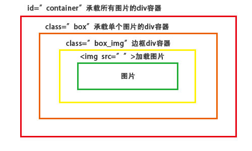

主要是运用Html+CSS+JavaScript（DOM对象和window对象）来实现一个瀑布流，
最终效果是在页面中滚动鼠标不断地加载图片永远划不到头，像百度图片这样的，
在没有设置分页的的情况下，当滚动滚动条的时候页面从数据库源源不断的加载图片呈现在页面中。
基本的操作步骤如下
1.在Html页面中创建承载图片的div
2.将准备的图片都加加载到页面中
3.为图片添加css样式
4.获取第一排每一列图片的高度
5.固定一排图片的宽度并且居中对齐
6.将图片放在第一排高度最小的列下面
7.改别图片高度并不断的循环获得高度最小的图片
8.滚动条监听事件
9.创建Json字符出模拟数据
10.动态的创建节点并为其添加根元素
11.调整动态图片的格式
创建承载图片的div容器
1.首先创建一个能够承载所有图片的div容器，设置id="container"
2.创建一个能够承载单个图片的div容器，设置class="box"
3.创建一个div容器来设置图片的边框效果，使样式更加美观，设置class="box_img"
4.用img标签来加载图片

例如：